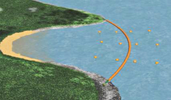
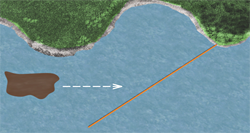
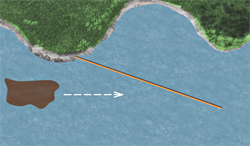

PÅ LAND
Slik festes lensen til land:
- Fest et tau ca. 25meter ut på lensen, strekk denne til land og sett godt fast. Tauet må være stramt slik at det kan ta opp hele lasten av lensen. Dette blir lensens hovedfortøyning til land.
- Trekk så lenseenden opp på land, over flomålet, og sett fast slik at den kan bevege seg fritt med bølger og tidevann.
- Legg ut absorbenter for å tette en eventuell lekkasje mellom lense og land.
- Absorbentputer kan med fordel benyttes for å tette eventuelle lekkasjepunkt . Et typisk eksempel er ved overgang land/sjø, som vist nedenfor:
- Påse at lensen blir holdt klar av kaier og andre steder hvor den kan henge seg opp på grunn av tidevann og bølger, eller bli skadet på grunn av skjell, skarpe kanter og lignende.

Bruk av oljelenser ved eller nær land.
Er oljens drivhastighet større enn 0,7 knop på grunn av strøm og vind, må oljen ledes inn til et sted hvor den kan tas opp.
Se da etter:
- En vik (bakevje) hvor oljen kan ledes inn i.
- Mulig tilkomst (veg) fra landsiden.
- Strandtype (unngå strender som er vanskelig å rengjøre)

Ved leding av olje i sterk strøm, kan tabell over benyttes.
I følge tabellen ovenfor må en ved strøm på 1,5 knop sette lensen i en vinkel på 30º eller mindre for å unngå at oljen presses under lensen på grunn av strømmens hastighet.
Jo høyere strømhastighet dess mindre/skarpere lensevinkel!Lenser kan benyttes til å lede olje bort fra steder vi ikke ønsker påslag

Lenser kan også benyttes til å skjerme og til å lede bort olje fra områder med høy sårbarhet

Sårbare områder skal være kartlagt og satt opp i prioritert rekkefølge.Kilesetting
- Benyttes for å lede oljen inn til et bestemt sted.

Skjerming
- Benyttes for å beskytte et område og for å lede oljen bort fra stedet.
